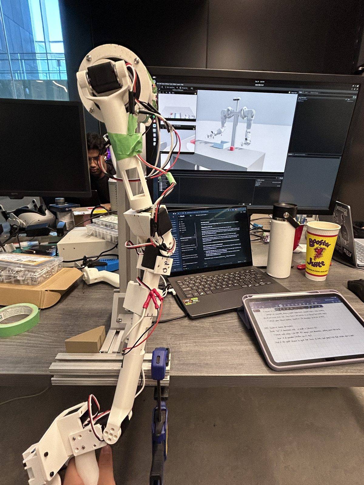
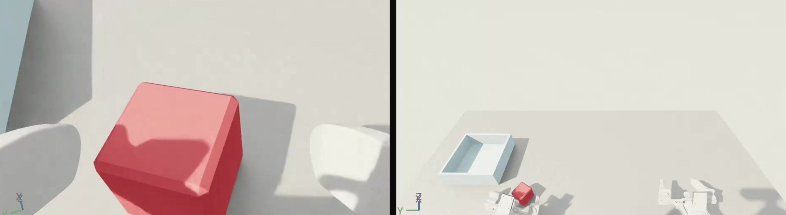
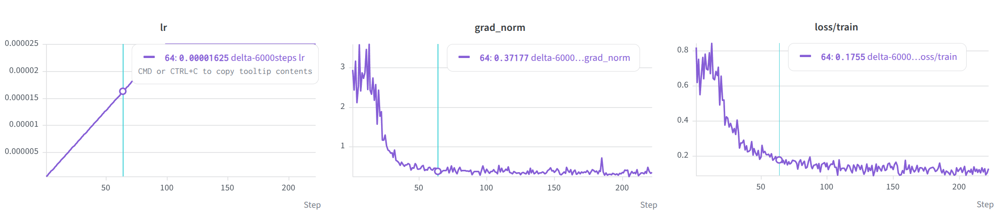
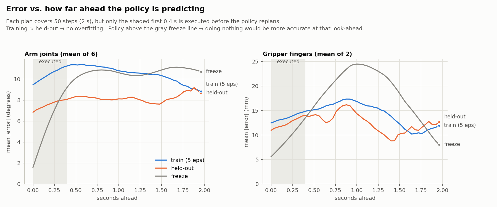
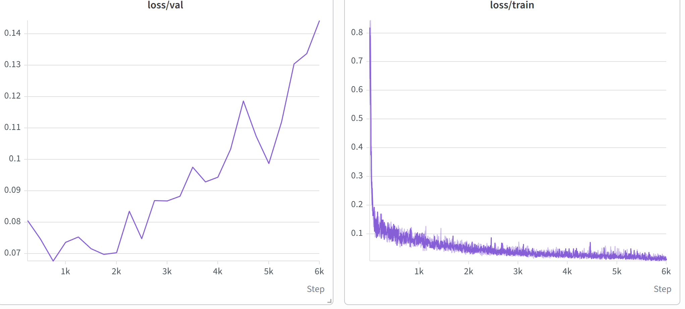

WATonomous · Humanoid team
Fine-tuning π₀.5 for pick and place
A π₀.5 vision-language-action model, fine-tuned so the Pioneer humanoid's left arm picks up a cube and places it in a tray in Isaac Sim. I recorded the demonstrations with a leader arm, wrote the training and evaluation scripts, and trained only the action expert on top of a frozen vision-language backbone.
π₀.5 VLAFlow matchingLeRobotPyTorchIsaac SimLeader-arm teleopWeights & Biases
The policy after 6,000 weight updates, running in Isaac Sim, over several attempts in a row. The two smaller windows are what the policy sees: the left wrist camera and the base camera.
Overview
The WATonomous humanoid team is building a humanoid called Pioneer, and I worked on its two-arm rig. My job was to get the left arm to do a simple manipulation task from camera images and a text prompt: pick up the cube and place it in the tray. To do that I recorded demonstrations in simulation, fine-tuned a vision-language-action model on them, and checked whether it had actually learned the task.
How π₀.5 is built
Training a policy from scratch takes far more data than one person can record, so I fine-tuned π₀.5, a vision-language-action (VLA) model from Physical Intelligence, starting from LeRobot's pi05_base weights. It has two parts:
- PaliGemma, a vision-language model (VLM) built on the 2-billion-parameter Gemma language model. It reads the camera images, the text prompt and the arm's joint state.
- The action expert, a much smaller action head with about 300 million parameters. It turns what the VLM understood into motion by flow matching: starting from random noise, it refines a chunk of 50 actions (two seconds at 25 Hz) in 10 steps.
Freezing the backbone
- The PaliGemma backbone is already trained on internet-scale images and text, so it can already read a scene and an instruction. What it has never seen is this arm, these cameras and this task.
- It has far too many parameters to fine-tune on 71 short demonstrations: that would need much more memory and risk damaging what it already knows.
- So I froze it and fine-tuned only the action head, the part that has to adjust to my task.
Recording demonstrations
There was no dataset for this arm, so I recorded one in simulation:
- The Pioneer arm in Isaac Sim is a digital twin of the real one.
- I drive it with a 3D-printed leader arm: seven Feetech STS3215 servos used only as encoders, one per joint and one for the gripper.
- Each leader joint maps directly to the matching simulated joint, so moving the leader by hand moves the robot the same way, with no inverse kinematics.

- My recorder saves four things 25 times a second as a LeRobot v3.0 dataset: the arm's joint positions (the state), the leader's joint targets (the action), three camera images and the text prompt.
- I built the scene (a table, a cube and a tray) and matched the three cameras to the real robot's specs: a base camera modelled on an Intel RealSense D455 and one on each wrist. The closer the simulated images are to the real ones, the less the policy has to relearn on the real arm.
- The finished dataset is 71 episodes of about 3 seconds each, 5,654 frames in total.

From a recording to model input
LeRobot's pre-processor and post-processor convert between the dataset and the model:
- Images are resized to 224 × 224, and the prompt and joint state are turned into tokens.
- Joint states and actions are normalized to roughly −1 to 1, using each dimension's 1st and 99th percentile. Without that, a wrist that moves through almost 2 radians would dominate the loss over a gripper finger that moves 0.05 metres.
- The post-processor undoes the normalization, so the output is joint targets in radians again.
- I trained on delta actions: each step the model predicts is an offset from where the arm was when it planned, while the gripper stays absolute. A policy that has not learned much then holds still instead of drifting toward an average pose.
The training script
I wrote the training loop by hand instead of calling LeRobot's training command. From top to bottom:
- Setup
- Fixes the random seeds, downloads the dataset from the Hugging Face Hub, and checks the Hub and Weights & Biases logins up front, so a missing token fails in seconds, not after hours of training.
- Model
- Loads
pi05_baseand matches its inputs and outputs to this dataset's cameras and joints. Weights stay in 32-bit floats while the forward pass runs in bfloat16, which is faster and smaller without rounding away small updates. - Train and validation split
- Holds out one shuffled episode for validation and trains on the other 70. The split is by episode because neighbouring frames are nearly identical.
- Data loading
- Each sample is one frame plus the next 50 actions, shuffled so every update mixes frames from many episodes.
- Processors
- Builds the normalization and tokenization steps from the dataset's statistics, using the delta-action statistics for actions.
- Freezing
- Turns gradients on only for the action expert and its small input and output layers, and gives the optimizer only those parameters.
- Learning rate
- AdamW with a peak of 2.5e-5: linear warmup over the first 100 updates, a hold at the peak, then cosine decay to 10% of the peak over the last 1,000 updates.
- Training loop
- Runs 16 samples per forward pass and adds up the gradients from two passes, so every weight update is based on 32 samples. Gradients are clipped to a norm of 1.0.
- Validation
- Scores the held-out episode every 250 updates with the same random noise each time, so a change in validation loss comes from the weights.
- Checkpoints and logs
- Logs loss, learning rate and gradient norm to a CSV file and to Weights & Biases, and uploads the final 14.5 GB checkpoint to the Hub.
Making it fit
- π₀.5 ran out of memory on my laptop's 12 GB GPU, so I moved training to a 48 GB cloud GPU.
- Gradient accumulation keeps the update size independent of the hardware: a batch of 2 over 16 passes on a small GPU and a batch of 16 over 2 passes on the cloud GPU both give 32 samples per update.
- Freezing the backbone saves memory too: it needs no gradients and no optimizer state.
- The first updates of a fine-tune are the riskiest, because the gradients are largest then: the gradient norm starts near 3 and falls to about 0.4 within 60 updates. The warmup keeps those steps small so they cannot wreck the pretrained weights, and the cosine decay lets them settle at the end.

The first run was underfit
- The first cloud run used 1,000 weight updates, about 5.7 passes over the roughly 5,600 training frames. The loss went down, but that says little about whether the arm would do the task.
- So I wrote an offline evaluation. It gives the policy recorded camera frames and joint states and compares its predicted actions with what I actually did on the leader arm, next to a baseline that just holds the arm's current position.
- The policy lost to that baseline. Over the first 0.4 seconds of each prediction, the part the arm executes before the policy plans again, its arm-joint error averaged about 10 degrees on episodes it had trained on, against about 5.5 degrees for holding still.
- A policy that is worse than standing still on its own training data has not learned the demonstrations yet, so it needed more training.

Training longer
- I raised the run to 6,000 updates, about 34 passes over the data. The training loss fell from about 0.70 to about 0.013, and in simulation the arm now picks up the cube and places it in the tray, as in the video at the top.
- Validation loss on the held-out episode was lowest between about 750 and 2,000 updates, around 0.07, then climbed to 0.144 while the training loss kept falling: the usual sign of overfitting.
- One held-out episode is a noisy measure, but the trend is steady: the first run trained too little, this one probably too much, and the best checkpoint is likely somewhere in between.

- Save checkpoints more often, and pick one by validation loss and success in simulation.
- Record more demonstrations, with more variety in where the cube and tray start.
- Measure a success rate over many resets.
- Try the policy on the real arm.
What I learned
- A loss curve is not an evaluation. The first run had a falling loss and a policy that was worse than doing nothing. One chart against a hold-still baseline made that obvious.
- Freeze what already works. 71 demonstrations cannot improve a backbone trained on internet-scale data, only damage it. Training the action head alone was enough for this task.
- Memory is a design constraint. Batch size, gradient accumulation and precision all had to be chosen around the GPU.